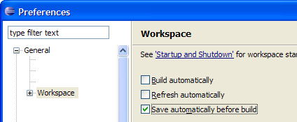

By default Eclipse will not save any unsaved changes of open files when a build process is started. This is usually undesirable when Build Automatically is switch off.
To change this open the Eclipse preferences (Window> Preferences...) and go the the General -> Workspace tab, then set the Save automatically before build option.

See Workbench User Guide > Tasks > Building resources > Saving resources automatically before a manual build for the offical Eclipse documention off this feature..
This information is included here because it is a frequently asked question.